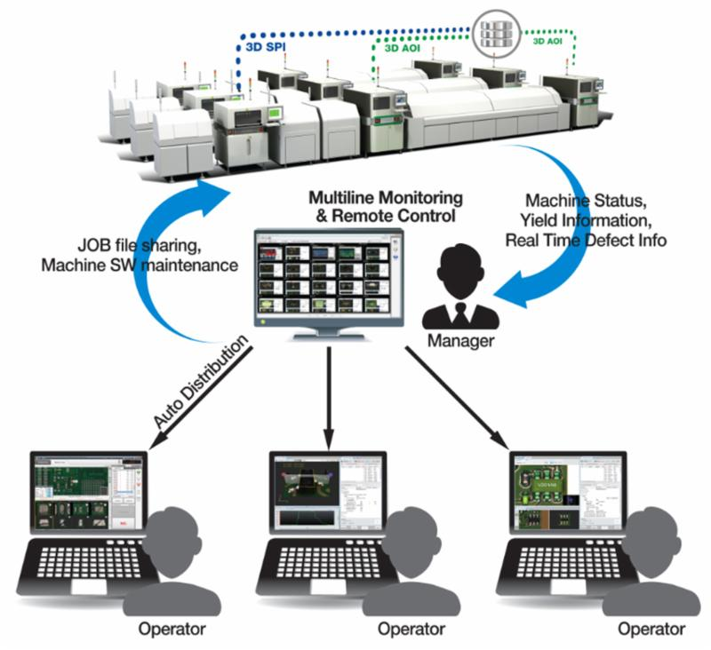

Tech Monthly- November 2014
Product News
Koh Young Technology Launches KSMART Integrated Technology Solution
Seoul, Korea - November 18, 2014 - Koh Young Technology announces the debut of the KSMART Integrated Technology Solution, a comprehensive productivity and process control center. The success of KSMART implementation results from the convergence of new Koh Young software technologies working in concert with 3D AOI and SPI capabilities. These technologies include the KSMART Remote Monitoring System (RMS), KSMART Link, and others, which will be added to KSMART as they are developed.
 KSMART Solution
KSMART Solution is Koh Young Technology's long-term vision to help customers realize maximum production efficiency and control for today's advanced electronics manufacturing. Today's production environment confronts the manufacturer with various challenges; new (smaller) components being introduced for reduced product size, greater flexibility requirements for high-end/high-mix productions, and much higher standards for equipment that must communicate in real time. Koh Young Technology's KSMART Solution comprises an easy-to-use, but powerful integrated toolbox designed to meet these challenges. KSMART enables real-time analysis of defects, beginning with simply providing true 3D inspection data obtained from Koh Young's 3D inspection systems. This data is essential for finding root causes of defects, and achieving process optimization. Further, it suggests 'Copy Exact' for multiple production lines and even different sites, as it provides the ability to control multiple inspection systems with standardized conditions and recipes.
KSMART Remote Monitoring System (RMS)
KSMART RMS is the first software product to achieve the total KSMART solution. With KSMART RMS, Koh Young inspection machines' status, production line yield information, and real time defect information from all Koh Young SPI and AOI machines in multiple production lines can be directly communicated with and operated efficiently. Factory managers can track root causes of defect issues and apply changes to inspection programs in real time. Real Time defect information is also shared with remote operators who can confirm the information. Koh Young's trusted 3D measurement-based inspection dataset is the underlying enabling technology that allows users to optimize processes based on such data, provided by Koh Young systems. KSMART RMS is introduced as a part of the total KSMART solution, and will be followed by KSMART Link, which will allow customers to analyze all 3D inspection results from Koh Young 3D SPI and 3D AOI system

Ultratech Introduces Superfast 4G Low-Cost In-line Inspection System For Patterned Wafers
Building on the Field-Proven Superfast 3G, Ultratech's 4G Inspection System Provides the Industry's Lowest-Cost, Highest-Productivity 3D Topography Solution for Advanced Lithography
San Jose, CA - November 17, 2014 (PRNewswire) - Ultratech, Inc. (Nasdaq: UTEK), a leading supplier of lithography, laser-processing and inspection systems used to manufacture semiconductor devices and high-brightness LEDs (HB-LEDs), today introduced the Superfast 4G high-volume, in-line, 3D topography inspection system. Ultratech's new 4G system builds on the field-tested capability of the Superfast 3G, providing the industry's highest-productivity and lowest-cost solution compared to competing systems. The Superfast 4G system's patented coherent gradient sensing (CGS) technology provides a high degree of flexibility that enables Ultratech customers to use a single type of wafer inspection tool to measure the front side of patterned wafers across the entire fab line at the lowest cost. Ultratech plans to begin shipping the Superfast 4G systems in the first quarter of 2015.
The Superfast 4G leads the industry:
Ultratech Vice President, Marketing Inspection System & Technology Transfer, Shrinivas Shetty explained, "By working with leading-edge memory and logic customers using Ultratech's 3G systems, we were able to successfully implement the industry's requirements for 3D topography with in-line inspection tools. Ultratech invested heavily in the algorithm and factory automation capabilities, expanded manufacturing capacity in Singapore and developed regional senior applications managers to help ensure a smooth ramp to volume production. Ultratech also made significant improvements to the new Superfast 4G inspection system, resulting in increases of 2.5x in performance and 65 percent in throughput, as well as a 30 percent reduction in edge exclusion, compared to the 3G system. Moreover, the two inspection systems have identical process modules retaining all critical optical components ensuring a smooth transition from the 3G to the 4G system for high-volume production. The Superfast 4G is an example of Ultratech's commitment to providing leading technology that cost-effectively addresses the critical needs of its global customers for high-volume manufacturing."
Ultratech's Superfast 4G Inspection System
Based on patented coherent gradient sensing (CGS) technology, Ultratech's Superfast 4G inspection system for patterned wafers provides the industry's highest throughput (125 wph), with the lowest cost-of-ownership (3x to 5x lower) compared to competing systems. The direct, front-side 3D topography measurement capability is well suited for patterned wafer applications such as feed-forward overlay distortion control, 3D topography measurement for focus control, and high-stress process control (bow, warpage, breakage). The Ultratech Superfast 4G inspection system provides leading technology to address the critical needs of its global customers in a cost-effective solution.